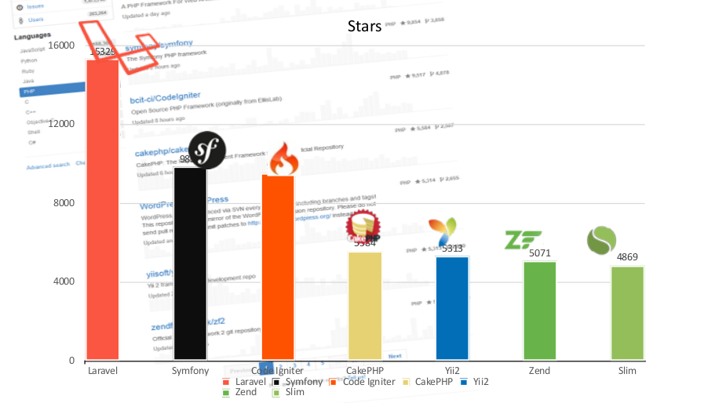

Tot Formació
L'applicació híbrida per a formar-te a les Terres de l'Ebre!

Creat per Țurcan Nicolae / nikolaeturcan@gmail.com
I una aplicació Nativa?
- Són aplicacions que s'executen només en una plataforma especifica.
- Requereixen de llenguatges i eines de desenvolupament respectives.
- Disposen del millor rendiment
- Requereixen d'un nivell de programació avançat.

"More Platforms, More Problems"
Què és una aplicació híbrida?
- És una aplicacions que s'executen en dispositius i sistemes operatius mòbils (Android, iOS, Windows Phone etc.)
- Són creades amb tecnologies Web: HTML5, JavaScript i CSS
- S'executen sobre un contenidor natiu utilitzant el motor d'un navegador mòbil per processar el HTML, JS i CSS de manera local (WebView)
- Tenen una capa intermèdia que habilita l'accés a capacitats natives del sistema operatiu en el que s'executen, com ara l'emmagatzematge, acceleròmetre, càmera, etc.

=
Quines eines son necessàries per al desenvolupament híbrid?
AngularJS
- És un framework JavaScript de desenvolupament d'aplicacions web.
- Va ser creat al 2009 per Miško Hevery i Adam Abrons, treballadors de Google.
- Es podria dir que utilitza el patró MVC (Model-View-Controller), encara que ells mateixos creadors el defineixen com un MVW (Model-View-Whatever (whatever works for you)).
- Actualment és el segon projecte Open Source més popular.
Cordova
- És un altre framework creat al 2009 per Nitobi que actualment pertany a Apache.
- Està format per un conjunt d'APIs que et donen accés a funcions del dispositiu als quals en teoria no tens accés nativament, coses com la càmera, l'acceleròmetre, etc.
- Ens permet crear aplicacions per a un munt de plataformes utilitzant un mateix llenguatge, fins i tot el mateix codi.
- Actualment, combinat amb AngularJS, disposa de més de 63 extensions.

Ionic
- També és un framework.
- És Open Source i s'utilitza per al desenvolupament de aplicacions mòbils.
- Utilitza tecnologies web i s'integra completament amb AngularJS.
- Va ser desenvolupat per l'empresa Driftyco al 2013 i actualment està en la versió 1.5.0.
- Al 2014 se van crear més de 320 mil aplicacions amb Ionic (Més de 50 mil aplicacions per mes).

Laravel
És un nou i poderós Framework PHP desenvolupat per Taylor Otwell, que promet portar al llenguatge PHP a un nou nivell.
Homestead
És una forma de desenvolupar els sites laravel en local que ens proporciona un entorn coherent i una sèrie d'eines de desenvolupament aprovades pel mateix Taylor Otwell, creador del laravel. Actualment, les eines que utilitza el homestead son: Nginx, MySQL/PostgreSQL, Beanstalk, Redis, Memcached i PHP 5.5. Per a tindre una idea més general, podríem resumir Homestead com un Vagrant preconfigurat que coincideix amb les eines i requeriments proporcionats per Forge.
Forge
És una forma d'allotjar els sites laravel en un entorn consistent, predictible i flexible. És un PAAS que gestiona i simplifica el desplegament del seu codi en fase de implementació a DigitalOcean, Linode, Amazon EC2 o Rackspace.
DigitalOcean
És un servei senzill i ràpid de cloud hosting, construït per a desenvolupadors. Els clients poden crear un servidor del núvol en 55 segons i començar a fer plans a partir dels 5$ al mes disposant d'un sistema operatiu amb 512 MB de RAM, 20GB SSD, 1 CPU, i la transferència d'1 TB. Amb un SLA (Service-level agreement) del 99,99%.
La interfície del tauler de control del DigitalOcean és senzill i intuïtiu, que disposa d'una API per als usuaris més avançats. DigitalOcean utilitza la virtualització KVM i, a més, allotja una biblioteca de tutorials molt útils que cobreixen la configuració del servidor i la seua optimització.
Resultat
Hit the next arrow...
... to step through ...
... a fragmented slide.
Fragment Styles
There's different types of fragments, like:
grow
shrink
fade-out
current-visible
highlight-red
highlight-blue
Transition Styles
You can select from different transitions, like:
None -
Fade -
Slide -
Convex -
Concave -
Zoom
Themes
reveal.js comes with a few themes built in:
Black
(default) -
White
-
League
-
Sky
-
Beige
-
Simple
Serif
-
Blood
-
Night
-
Moon
-
Solarized
Slide Backgrounds
Set data-background="#dddddd" on a slide to change the background color. All CSS
color formats are supported.
Image Backgrounds
<section data-background="image.png">Tiled Backgrounds
<section data-background="image.png"
data-background-repeat="repeat" data-background-size="100px">Video Backgrounds
<section
data-background-video="video.mp4,video.webm">... and GIFs!
Background Transitions
Different background transitions are available via the backgroundTransition option. This one's called "zoom".
Reveal.configure({ backgroundTransition: 'zoom' })Background Transitions
You can override background transitions per-slide.
<section data-background-transition="zoom">Pretty Code
function linkify( selector ) {
if( supports3DTransforms ) {
var nodes = document.querySelectorAll( selector );
for( var i = 0, len = nodes.length; i < len; i++ ) {
var node = nodes[i];
if( !node.className ) {
node.className += ' roll';
}
}
}
}
Code syntax highlighting courtesy of highlight.js.
Marvelous List
- No order here
- Or here
- Or here
- Or here
Fantastic Ordered List
- One is smaller than...
- Two is smaller than...
- Three!
Tabular Tables
| Item | Value | Quantity |
|---|---|---|
| Apples | $1 | 7 |
| Lemonade | $2 | 18 |
| Bread | $3 | 2 |
Clever Quotes
These guys come in two forms, inline:
“The nice thing about standards is that there are so many to choose from”
and block:
“For years there has been a theory that millions of monkeys typing at random on millions of typewriters would reproduce the entire works of Shakespeare. The Internet has proven this theory to be untrue.”
Intergalactic Interconnections
You can link between slides internally, like this.
Speaker View
There's a speaker view. It includes a timer, preview of the upcoming slide as well as your speaker notes.
Press the S key to try it out.
Export to PDF
Presentations can be exported to PDF, here's an example:
Global State
Set data-state="something" on a slide and "something"
will be added as a class to the document element when the slide is open. This lets you
apply broader style changes, like switching the page background.
State Events
Additionally custom events can be triggered on a per slide basis by binding to the
data-state name.
Reveal.addEventListener( 'customevent', function() {
console.log( '"customevent" has fired' );
} );
Take a Moment
Press B or . on your keyboard to pause the presentation. This is helpful when you're on stage and want to take distracting slides off the screen.
Much more
- Right-to-left support
- Extensive JavaScript API
- Auto-progression
- Parallax backgrounds
- Custom keyboard bindings